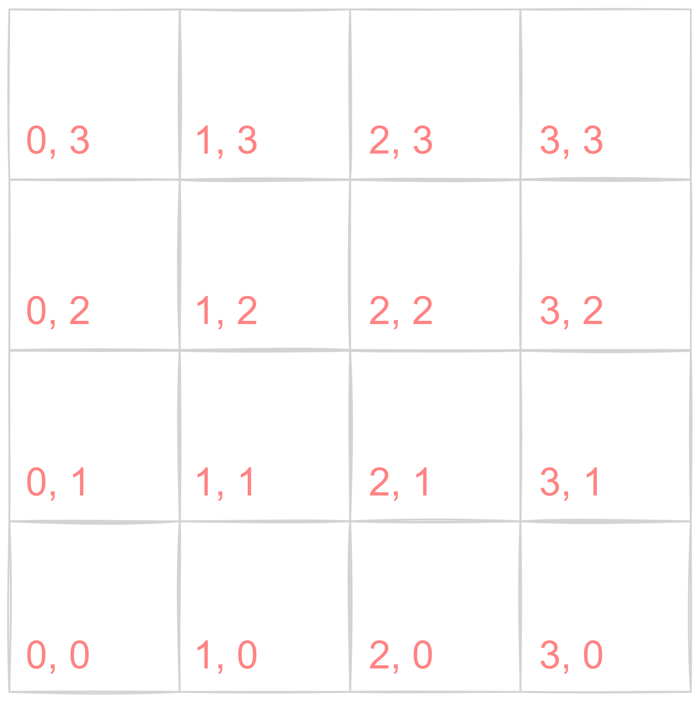
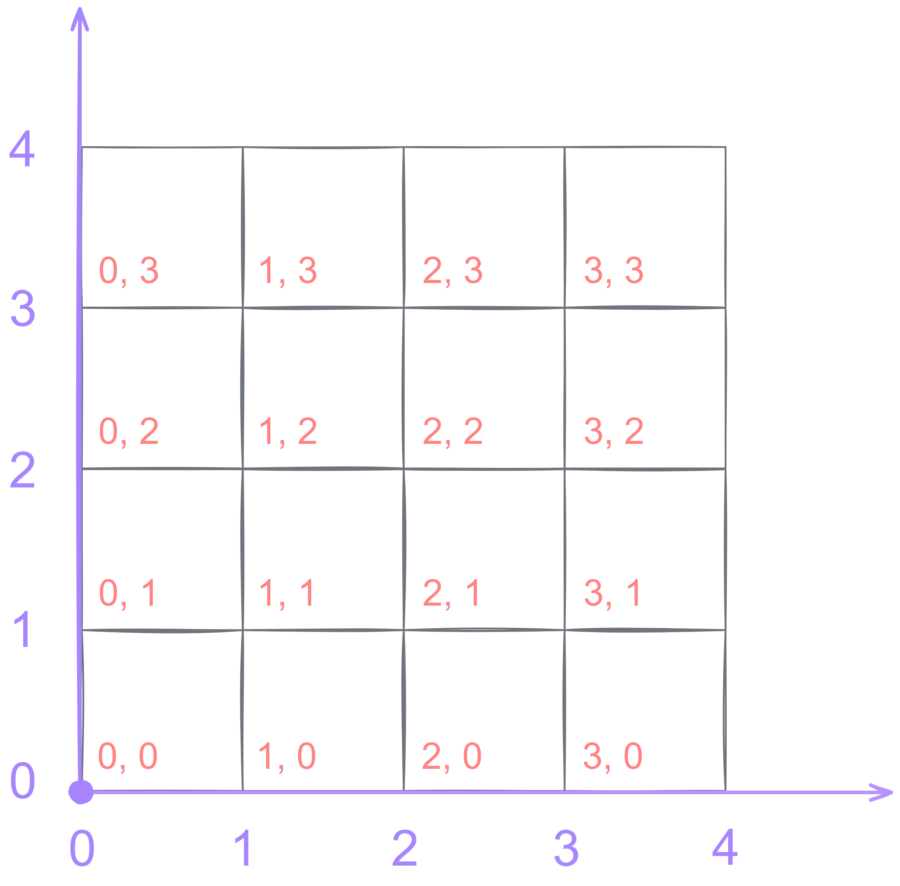
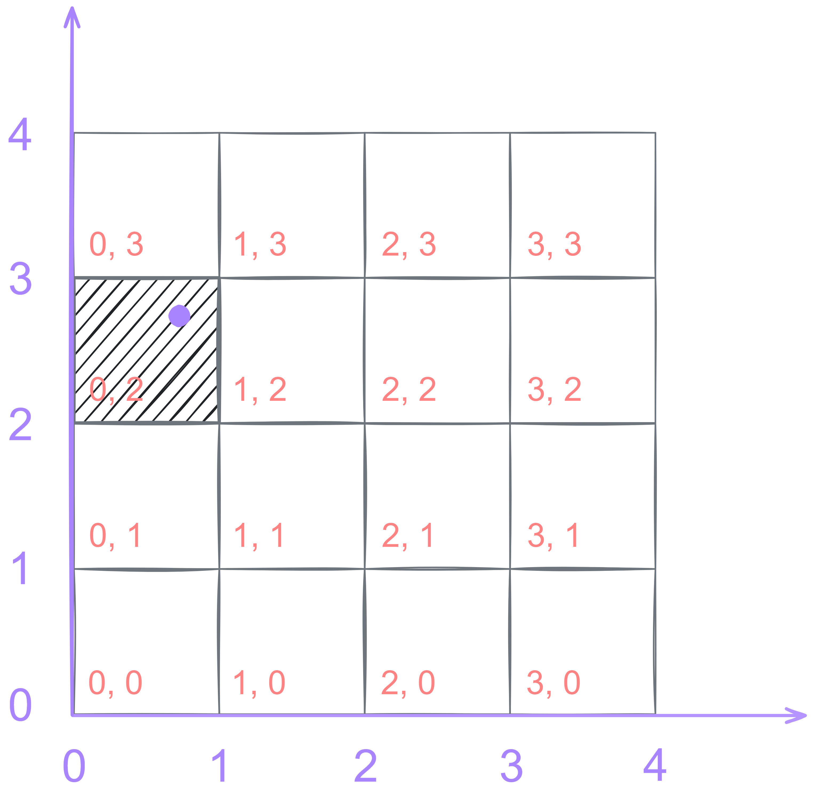

The Center of a Pixel
Up until now, we've been ignoring our pixels' center coordinates. In the gradient shader, we divided X by the width of our image to get a value from 0 to 1 in the horizontal direction, but is that really correct? Consider this 4x4 grid of pixels with their X and Y indices labeled in red, starting from zero.
Take, for example, the first pixel from the bottom left. Where does the point (0, 0) actually fall in the continuous 2D plane? Is it on one of the corners of the pixel? Is it on the center?
Here's an idea. We know that our image occupies 4 units of space in each direction, so why not put a ruler for each axis to help us measure our pixels?
Ah! It's starting to make sense. If we plot the integer coordinates of a pixel as a point on the 2D plane, we get the bottom left corner of the pixel. This means that the center of the pixel must be offset by 0.5 units.
Treating the pixel grid coordinates like this will also make our calculations a lot easier and more intuitive. For example, to find the pixel that's 20% of the way along the width of the image and 70% along the height, we just need to multiply our width and height by 0.2 and 0.7 respectively.
(4, 4) * (0.2, 0.7) = (0.8, 2.8)The resulting point doesn't represent an exact pixel on our grid, and that's totally fine! In image sampling, for example, we use methods like bilinear interpolation (which is just a 2D version of linear interpolation) to mix the colors from the 4 closest pixels to our sample point, giving them different weights based on how close they each are to the sample point. If you need to know the exact integer coordinates of the pixel that contains this point, all you need to know is to floor (round down) your coordinates, so for our example above, we get:
floor(0.8, 2.8) = (0, 2)In fact, let's actually plot the (unfloored) point on our grid to confirm this.
This might seem trivial, but it's a super important concept to grasp and will come in handy later.
In the next article, we'll rediscover how to render a triangle without ever using a GPU.